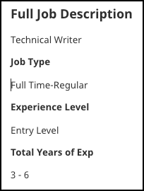

The problem
“How can I get experience in technical writing when all the entry-level jobs require experience?” I’ve heard this a lot. It’s perhaps the most difficult issue to overcome when trying to get into technical writing. Just today I looked up entry level positions for technical writing on Indeed. I saw only one in my area, and here’s what it said:

3-6 years? I have seen many other entry level positions like this, usually requiring 1-3 years of experience. How is that entry level? Of course, you can always apply anyway, but even in interviews I have found getting around a lack of experience extremely difficult.
Note: This post is about technical writing jobs for the software industry, including API documentation. There are many other kinds of technical writing out there, but this is my area of expertise.
Here are the minimum requirements to get a technical writing job:
- A college degree. Usually in a technical subject or English, Communications, or Journalism. If you already have experience, they will often accept a degree in any subject. Yes, a degree is pretty much always a requirement. There are exceptions, but they are rare.
- Writing samples to share, proving you can write technical documentation well.
- Experience
- Experience
- Experience
- Knowledge of a programming language. Usually Java, Python, JavaScript are mentioned. Sometimes they also mention C++ or C#.
- Knowledge of the tools. Markdown, git, command line. If going the DITA route, knowledge of FrameMaker is common.
In this post, I will talk about those middle three. You could probably already tell I was setting you up.
This is one of the most problematic issues for aspiring technical writers, because how do you get experience when even entry-level jobs require experience. Here are some suggestions.
- Get an internship You have to be in college to get into an internship.
- Get into a college program in technical writing that has ties to the industry and promises to place you when you graduate These are seldom the higher paying, software development jobs, but any experience gets your foot in the door.
- Get any job in an IT industry, and try to work your way into a tech writing position You still have to get in. Not so hard if you have a degree in IT. Harder if it’s in English or Journalism. Work in a place that doesn’t do software, but you can offer to help write some procedure manuals or something to get started.
- Volunteer Write manuals for someone. Find a church or other nonprofit that could use some technical writing, such as a procedure manual. These also tend not to be software docs, so you would still have to work into software documentation after getting your next job, if you can.
- Work for a startup Again, this may be more of a volunteer job, or with very limited hours. I did two projects for a startup after a friend from church mentioned they had a need. Even after that, companies often ask, “How many years of full-time experience do you have as a technical writer?” Notice how that’s worded? You can really beef up your portfolio this way.
- Get experience with an open source project This is problematic, but sometimes possible. Create your own open source project and document that. You have to have at least some technical knowledge. If you want to get a head start, check out this Reddit post.
Some of this is research heavy, so I’m going to get into each of these in more detail in upcoming posts. This will give you an idea of where I am headed. Let’s start with the first two.
Technical writing internships
Technical writing internships can help you get your foot in the door in getting experience with technical writing. Any experience is helpful, and even if the internship is not for developer documentation, you can still add it on your resume under “Experience,” which can make all the difference. Keep in mind that many of these internships will pay you as well, so an internship is not necessarily a vow of poverty.
The minimal requirement to get into a technical writing internship is usually that you are currently enrolled in college. However, not many require that your major is technical writing. Common requirements are majors in communications, journalism, English, software engineering, or another IT major. One post I found on Indeed said that business majors were welcome. For some internships, I found that any major was acceptable.
I also noticed that some require you to have been in college for two years already, or be a year away from getting your bachelors degree.
A lot of large tech companies offer internships, such as Google, Facebook, and Amazon. Sometimes there is a lot of competition for internships, while at other times, or depending on the company, you may be able to land an internship without too much trouble.
Handshake recommends starting a search for an internship up to a year ahead of time. For more on college programs that offer inroads into the technical writing profession, read the next section.
College programs that help you get into technical writing
I asked around about what technical writing college degrees or certification programs offered either an internship, or job placement upon completion. Having discussed this question with someone in leadership at STC (Society for Technical Communication), I was told that most universities and certification programs now require an internship as a part of their course of study.
San Jose State University, for their technical writing program, says on their website, “We have a strong job-placement record and help coordinate paid internships with local employers during the summer and the school year.” This is in Silicon Valley, near where I live.
Not far from there, I heard that Berkeley has a technical writing program that offers internships and may have connections to the industry as well.
Further from me, in India, Metapercept Technology Services offers a Buddy-up with a technical writer program. It is a training-to-internship-to-hiring program. Internship and hiring are based on the participants performance during the training and internship.
For programs that don’t directly connect you to an internship or job, most help you create a portfolio, which is a step in the right direction.
If you are considering either a certification program or college degree in technical writing, I would make sure they offer a way into the industry directly. At a minimum they should offer an internship, or even better, connections to the industry with a high rate of students being placed at companies. Since it is so difficult to get started without actual experience, I would recommend rejecting any program that only helps you build your portfolio. Remember, experience is king. If they can get you experience, that’s what counts. The best experience would be for the kind of technical writing you want to get into, such as writing documentation for software developers.
I will continue going through this list in my next post. In the meantime, feel free to leave a comment below. I especially welcome comments about programs or schools that offer not only training, but experience in the field that might lead to a job.